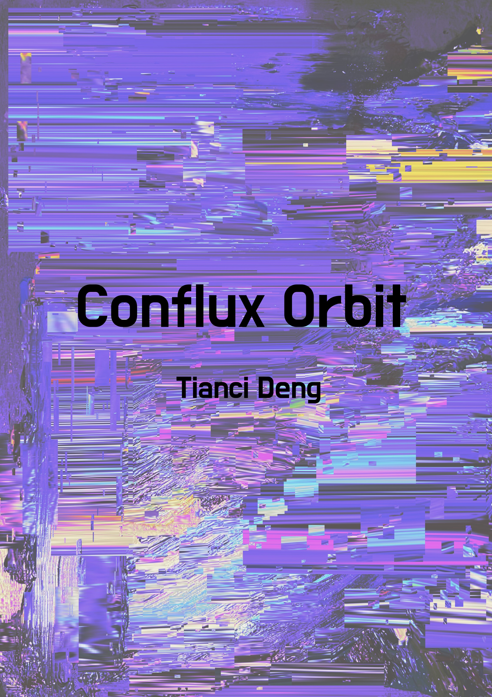
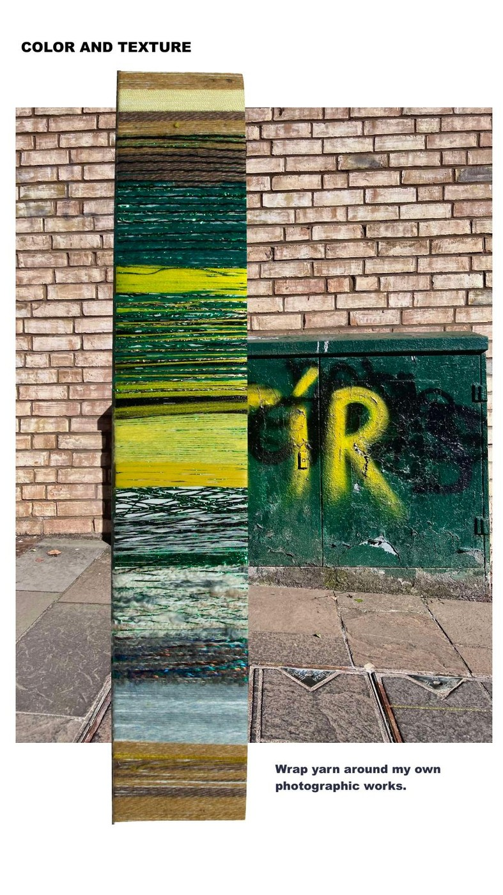
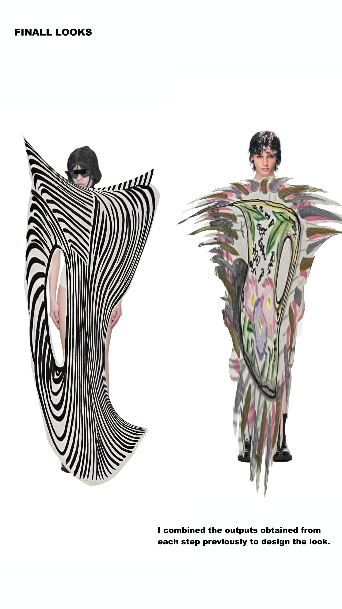
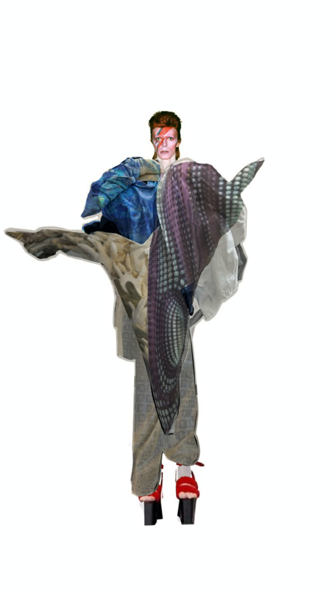

001 · Conflux Orbit 002 · Error Matrix
002 · Error Matrix
 003 · Resonant Marks
003 · Resonant Marks
 004 · Cyberpanorama · Video
004 · Cyberpanorama · Video
 005 · New Human · Video
005 · New Human · Video

006 · Color & Texture
007 · Curious Find
008 · Artist Film Muse